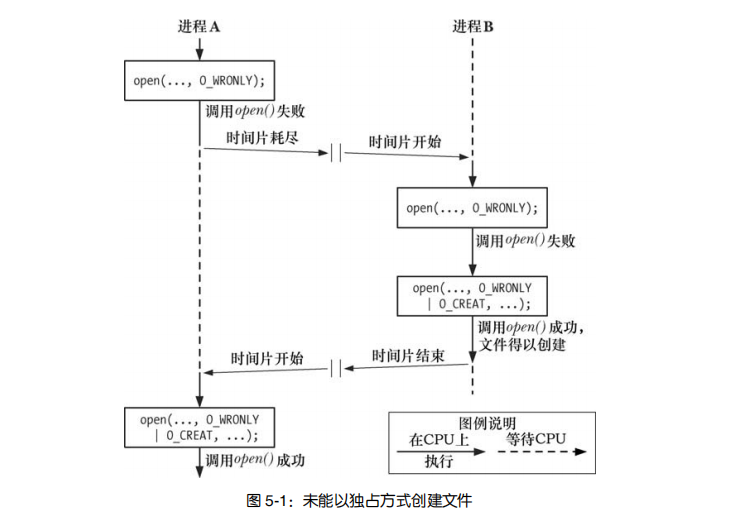
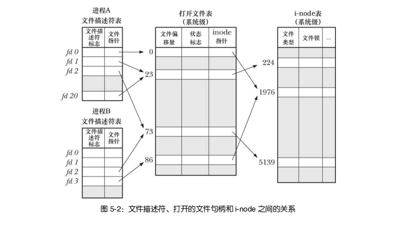
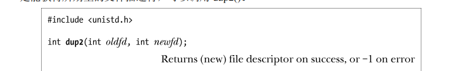
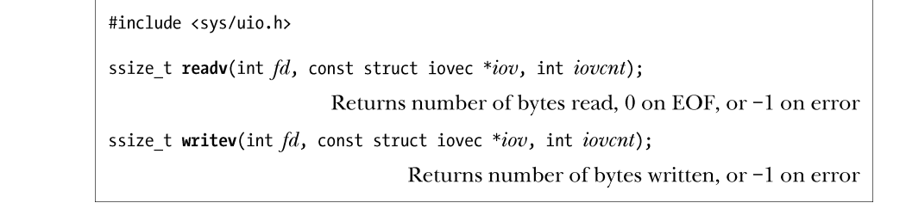
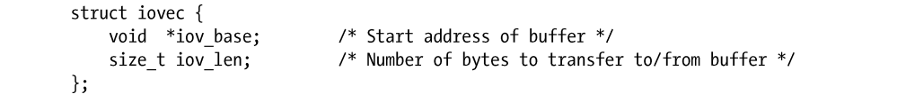
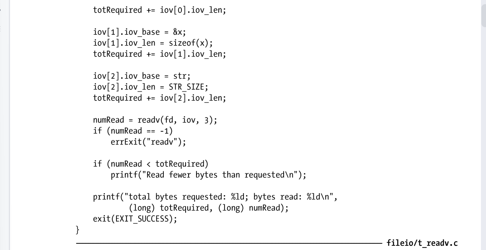
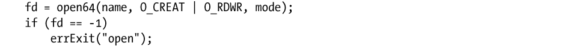
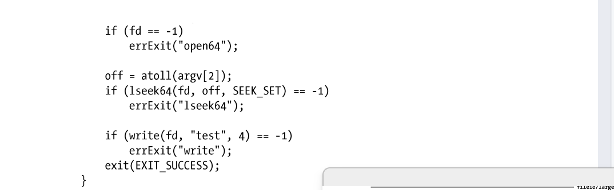
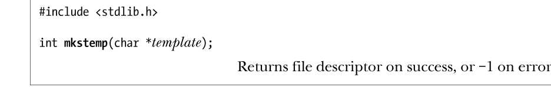

Linux漫游 更深层次的文件IO
深入探究文件IO
原子操作和竞争条件
我们下面要要谈到的是高级一些的文件IO，这里，我们就需要考虑到原子操作和竞争条件.也就是说,我们现在来考虑一下多进程下的文件IO函数行为
举个例子:以独占方式创建一个文件
当同时指定 O_EXCL 与 O_CREAT 作为 open()的标志位时，如果要打开的文件已然存在，则 open()将返回一个错误。这提供了一种机制，保证进程是打开文件的创建者。
下面的这个程序是有问题的:

在多进程条件下,我们如果不加原子操作,非文件开创的进程会认为是自己开创的进程.

从而埋下隐患.结合 O_CREAT 和 O_EXCL 标志来一次性地调用 open()可以防止这种情况，因为这确保了检查文件和创建文件的步骤属于一个单一的原子（即不可中断的）操作。
再举个例子:向文件尾部追加数据
还有一个例子,就是多个进程同时向某一个文件追加数据
if(lseek(fd, 0, SEEK_END) == -1){
errExit(-1);
}
if(write(fd,buf,len) != len){
fatal("Partially write or failed write!");
} 但是，这段代码存在的缺陷与前一个例子如出一辙。如果第一个进程执行到 lseek()和 write()之间，被执行相同代码的第二个进程所中断，那么这两个进程会在写入数据前，将文件偏移量设为相同位置，而当第一个进程再次获得调度时，会覆盖第二个进程已写入的数据。此时再次出现了竞争状态，因为执行的结果依赖于内核对两个进程的调度顺序。
需要将文件偏移量的移动与数据写操作纳入同一原子操作。在打开文件时加入 O_APPEND 标志就可以保证这一点。有些文件系统（例如 NFS）不支持 O_APPEND 标志。
文件控制操作：fcntl()
fcntl()系统调用对一个打开的文件描述符执行一系列控制操作。

cmd 参数所支持的操作范围很广。本章随后各节会对其中的部分操作加以研讨，剩下的操作将在后续各章中进行论述。
fcntl()的第三个参数以省略号来表示，这意味着可以将其设置为不同的类型，或者加以省略。内核会依据 cmd 参数（如果有的话）的值来确定该参数的数据类型。
打开文件的状态标志
这个函数有一个用途:针对打开的文件,获取或修改其访问模式和状态标志（这些值是通过指定 open()调用的 flag 参数来设置的）。要获取这些设置，应将 fcntl()的 cmd 参数设置为F_GETFL。

在上述代码之后，可以以如下代码测试文件是否以同步写方式打开：

当然,判断访问模式就有些复杂了
这是因为 O_RDONLY(0)、O_WRONLY(1)和 O_RDWR(2)这 3 个常量并不与打开文件状态标志中的单个比特位对应。因此，要判定访问模式，需使用掩码 O_ACCMODE 与 flag 相与，将结果与 3 个常量进行比对，示例代码如下：
可以使用 fcntl()的 F_SETFL 命令来修改打开文件的某些状态标志。允许更改的标志有O_APPEND、O_NONBLOCK、O_NOATIME、O_ASYNC 和 O_DIRECT。系统将忽略对其他标志的修改操作。（有些其他的 UNIX 实现允许 fcntl()修改其他标志，如 O_SYNC。）使用 fcntl()修改文件状态标志，尤其适用于如下场景。
- 文件不是由调用程序打开的，所以程序也无法使用 open()调用来控制文件的状态标志（例如，文件是 3 个标准输入输出描述符中的一员，这些描述符在程序启动之前就被打开）。
- 文件描述符的获取是通过 open()之外的系统调用。比如 pipe()调用，该调用创建一个管道，并返回两个文件描述符分别对应管道的两端。再比如 socket()调用，该调用创建一个套接字并返回指向该套接字的文件描述符。
为了修改打开文件的状态标志，可以使用 fcntl()的 F_GETFL 命令来获取当前标志的副本，然后修改需要变更的比特位，最后再次调用 fcntl()函数的 F_SETFL 命令来更新此状态标志。因此，为了添加 O_APPEND 标志，可以编写如下代码：

文件描述符和打开文件之间的关系
多个文件描述符当然可以指向同一个文件
这些文件描述符可在相同或不同的进程中打开。要理解具体情况如何，需要查看由内核维护的 3 个数据结构。
- 进程级的文件描述符表。
- 系统级的打开文件表。
- 文件系统的 i-node 表。
针对每个进程，内核为其维护打开文件的描述符（open file descriptor）表。该表的每一条目都记录了单个文件描述符的相关信息，如下所示。
- 控制文件描述符操作的一组标志。（目前，此类标志仅定义了一个，即 close-on-exec 标志，将在 27.4 节予以介绍。）
- 对打开文件句柄的引用。
内核对所有打开的文件维护有一个系统级的描述表格（open file description table）。有时，也称之为打开文件表（open file table），并将表中各条目称为打开文件句柄（open file handle）。一个打开文件句柄存储了与一个打开文件相关的全部信息，如下所示。
- 当前文件偏移量（调用 read()和 write()时更新，或使用 lseek()直接修改）。
- 打开文件时所使用的状态标志（即，open()的 flags 参数）。
- 文件访问模式（如调用 open()时所设置的只读模式、只写模式或读写模式）。
- 与信号驱动 I/O 相关的设置（见 63.3 节）。
- 对该文件 i-node 对象的引用。
每个文件系统都会为驻留其上的所有文件建立一个 i-node 表。第 14 章将详细讨论 i-node 结构和文件系统的总体结构。这里只是列出每个文件的 i-node 信息，具体如下。
- 文件类型（例如，常规文件、套接字或 FIFO）和访问权限。
- 一个指针，指向该文件所持有的锁的列表。
- 文件的各种属性，包括文件大小以及与不同类型操作相关的时间戳。
打开的文件句柄以及 i-node 之间的关系。在下图中，两个进程拥有诸多打开的文件描述符。在进程 A 中，文件描述符 1 和 20 都指向同一个打开的文件句柄（标号为 23）。这可能是通过调用 dup()、dup2()或 fcntl()而形成的（参见 5.5 节）。进程A的文件描述符2和进程B的文件描述符2都指向同一个打开的文件句柄（标号为73）。这种情形可能在调用 fork()后出现（即，进程 A 与进程 B 之间是父子关系），或者当某进程通过UNIX 域套接字将一个打开的文件描述符传递给另一进程时，也会发生（参见 61.13.3 节）。此外，进程 A 的描述符 0 和进程 B 的描述符 3 分别指向不同的打开文件句柄，但这些句柄均指向 i-node 表中的相同条目（1976），换言之，指向同一文件。发生这种情况是因为每个进程各自对同一文件发起了 open()调用。同一个进程两次打开同一文件，也会发生类似情况。上述讨论揭示出如下要点。
- 两个不同的文件描述符，若指向同一打开文件句柄，将共享同一文件偏移量。因此，如果通过其中一个文件描述符来修改文件偏移量（由调用 read()、write()或 lseek()所致），那么从另一文件描述符中也会观察到这一变化。无论这两个文件描述符分属于不同进程，还是同属于一个进程，情况都是如此。
- 要获取和修改打开的文件标志（例如，O_APPEND、O_NONBLOCK 和 O_ASYNC），可执行 fcntl()的 F_GETFL 和 F_SETFL 操作，其对作用域的约束与上一条颇为类似。
- 相形之下，文件描述符标志（亦即，close-on-exec 标志）为进程和文件描述符所私有。对这一标志的修改将不会影响同一进程或不同进程中的其他文件描述符。

复制文件描述符
Bourne shell 的 I/O 重定向语法 2>&1，意在通知 shell 把标准错误（文件描述符 2）重定向到标准输出（文件描述符 1）。因此，下列命令将把（因为 shell 按从左至右的顺序处理 I/O 重定向语句）标准输出和标准错误写入 result.log 文件：
./myscript 2>&1 | less shell 通过复制文件描述符 21实现了标准错误的重定向操作，因此文件描述符 2 与文件描述符 1 指向同一个打开文件句柄（类似于图 5-2 中进程 A 的描述符 1 和 20 指向同一打开文件句柄的情况）。可以通过调用 dup()和 dup2()来实现此功能。
请注意，要满足 shell 的这一要求，仅仅简单地打开 results.log 文件两次是远远不够的（第一次在描述符 1 上打开，第二次在描述符 2 上打开）。首先两个文件描述符不能共享相同的文件偏移量指针，因此有可能导致相互覆盖彼此的输出。再者打开的文件不一定就是磁盘文件。在如下命令中，标准错误就将和标准输出一起送达同一管道：
dup()调用复制一个打开的文件描述符 oldfd，并返回一个新描述符，二者都指向同一打开的文件句柄。系统会保证新描述符一定是编号值最低的未用文件描述符。

假设发起如下调用：
newfd = dup(1); 再假定在正常情况下，shell 已经代表程序打开了文件描述符 0、1 和 2，且没有其他描述符在用，dup()调用会创建文件描述符 1 的副本，返回的文件描述符编号值为 3。如果希望返回文件描述符 2，可以使用如下技术：
只有当描述符 0 已经打开时，这段代码方可工作。如果想进一步简化上述代码，同时总是能获得所期望的文件描述符，可以调用 dup2()。

dup2()系统调用会为 oldfd 参数所指定的文件描述符创建副本，其编号由 newfd 参数指定。如果由 newfd 参数所指定编号的文件描述符之前已经打开，那么 dup2()会首先将其关闭。（dup2()调用会默然忽略 newfd 关闭期间出现的任何错误。故此，编码时更为安全的做法是：在调用dup2()之前，若 newfd 已经打开，则应显式调用 close()将其关闭。）
前述调用 close()和 dup()的代码可以简化为：
dup2(1,2); 若调用 dup2()成功，则将返回副本的文件描述符编号（即 newfd 参数指定的值）。如果 oldfd 并非有效的文件描述符，那么 dup2()调用将失败并返回错误 EBADF，且不关闭 newfd。如果 oldfd 有效，且与 newfd 值相等，那么 dup2()将什么也不做，不关闭 newfd，并将其作为调用结果返回。
fcntl()的 F_DUPFD 操作是复制文件描述符的另一接口，更具灵活性。
该调用为 oldfd 创建一个副本，且将使用大于等于 startfd 的最小未用值作为描述符编号。该调用还能保证新描述符（newfd）编号落在特定的区间范围内。总是能将 dup()和 dup2()调用改写为对 close()和 fcntl()的调用，虽然前者更为简洁。（还需注意，正如手册页中所描述的，dup2()和 fcntl()二者返回的 errno 错误码存在一些差别。）
由图 5-2 可知，文件描述符的正、副本之间共享同一打开文件句柄所含的文件偏移量和状态标志。然而，新文件描述符有其自己的一套文件描述符标志，且其 close-on-exec 标志（FD_CLOEXEC）总是处于关闭状态。下面将要介绍的接口，可以直接控制新文件描述符的close-on-exec 标志。
dup3()系统调用完成的工作与 dup2()相同，只是新增了一个附加参数 flag，这是一个可以修改系统调用行为的位掩码。

目前，dup3()只支持一个标志 O_CLOEXEC，这将促使内核为新文件描述符设置 close-on-exec标志（FD_CLOEXEC）。设计该标志的缘由，类似于 4.3.1 节对 open()调用中 O_CLOEXEC 标志的描述。dup3()系统调用始见于 Linux 2.6.27，为 Linux 所特有。Linux 从 2.6.24 开始支持 fcntl()用于复制文件描述符的附加命令：F_DUPFD_CLOEXEC。该标志不仅实现了与 F_DUPFD 相同的功能，还为新文件描述符设置 close-on-exec 标志。同样，此命令之所以得以一显身手，其原因也类似于 open()调用中的 O_CLOEXEC 标志。SUSv3 并未论及 F_DUPFD_CLOEXEC 标志，但 SUSv4 对其作了规范。
在文件特定偏移量处的 I/O：pread()和 pwrite()
系统调用 pread()和 pwrite()完成与 read()和 write()相类似的工作，只是前两者会在 offset 参数所指定的位置进行文件 I/O 操作，而非始于文件的当前偏移量处，且它们不会改变文件的当前偏移量。

pread()调用等同于将如下调用纳入同一原子操作：对 pread()和 pwrite()而言，fd 所指代的文件必须是可定位的（即允许对文件描述符执行lseek()调用）。
多线程应用为这些系统调用提供了用武之地。正如第 29 章所述，进程下辖的所有线程将共享同一文件描述符表。这也意味着每个已打开文件的文件偏移量为所有线程所共享。当调用pread()或 pwrite()时，多个线程可同时对同一文件描述符执行 I/O 操作，且不会因其他线程修改文件偏移量而受到影响。如果还试图使用 lseek()和 read()(或 write())来代替 pread()（或pwrite()），那么将引发竞争状态，这类似于 5.1 节讨论 O_APPEND 标志时的描述（当多个进程的文件描述符指向相同的打开文件句柄时，使用 pread()和 pwrite()系统调用同样能够避免进程间出现竞争状态）。
如果需要反复执行 lseek()，并伴之以文件 I/O，那么 pread()和 pwrite()系统调用在某些情况下是具有性能优势的。这是因为执行单个 pread()（或 pwrite()）系统调用的成本要低于执行 lseek()和 read()（或 write()）两个系统调用。然而，较之于执行 I/O 实际所需的时间，系统调用的开销就有些相形见绌了。分散输入和集中输出（Scatter-Gather I/O）：readv() 和 writev()
readv()和 writev()系统调用分别实现了分散输入和集中输出的功能。

这些系统调用并非只对单个缓冲区进行读写操作，而是一次即可传输多个缓冲区的数据。数组 iov 定义了一组用来传输数据的缓冲区。整型数 iovcnt 则指定了 iov 的成员个数。iov 中的每个成员都是如下形式的数据结构。

SUSv3 标准允许系统实现对 iov 中的成员个数加以限制。系统实现可以通过定义<limits.h>文件中 IOV_MAX 来通告这一限额，程序也可以在系统运行时调用 sysconf (_SC_ IOV_MAX)来获取这一限额。（11.2 节将介绍 sysconf()。）SUSv3 要求该限额不得少于 16。Linux将 IOV_MAX 的值定义为 1024，这是与内核对该向量大小的限制（由内核常量 UIO_MAXIOV定义）相对应的。然而，glibc 对 readv()和 writev()的封装函数1还悄悄做了些额外工作。若系统调用因iovcnt 参数值过大而失败，外壳函数将临时分配一块缓冲区，其大小足以容纳 iov 参数所有成员所描述的数据缓冲区，随后再执行 read()或 write()调用（参见后文对使用 write()实现writev()功能的讨论）。图 5-3 展示的是一个关于 iov、iovcnt 以及 iov 指向缓冲区之间关系的示例。

分散输入
readv()系统调用实现了分散输入的功能：从文件描述符 fd 所指代的文件中读取一片连续的字节，然后将其散置（“分散放置”）于 iov 指定的缓冲区中。这一散置动作从 iov[0]开始，依次填满每个缓冲区。原子性是 readv()的重要属性。换言之，从调用进程的角度来看，当调用 readv()时，内核在 fd 所指代的文件与用户内存之间一次性地完成了数据转移。这意味着，假设即使有另一进程（或线程）与其共享同一文件偏移量，且在调用 readv()的同时企图修改文件偏移量，readv()所读取的数据仍将是连续的。调用 readv()成功将返回读取的字节数，若文件结束1将返回 0。调用者必须对返回值进行检查，以验证读取的字节数是否满足要求。若数据不足以填充所有缓冲区，则只会占用2部分缓冲区，其中最后一个缓冲区可能只存有部分数据。程序清单 5-2 展示了 readv()的用法。在本书中，当以函数名称冠以“t_”来命名示例程序时（例如：程序清单 5-2 中的程序t_readv.c），意在表明该程序主要用于展示单个系统调用或库函数的用法。程序清单 5-2：使用 readv()执行分散输入 _


集中输出
writev()系统调用实现了集中输出：将 iov 所指定的所有缓冲区中的数据拼接（“集中”）起来，然后以连续的字节序列写入文件描述符 fd 指代的文件中。对缓冲区中数据的“集中”始于iov[0]所指定的缓冲区，并按数组顺序展开。像 readv()调用一样，writev()调用也属于原子操作，即所有数据将一次性地从用户内存传输到 fd 指代的文件中。因此，在向普通文件写入数据时，writev()调用会把所有的请求数据连续写入文件，而不会在其他进程（或线程）写操作的影响下1分散地写入文件2。
如同 write()调用，writev()调用也可能存在部分写的问题。因此，必须检查 writev()调用的返回值，以确定写入的字节数是否与要求相符。
readv()调用和 writev()调用的主要优势在于便捷。如下两种方案，任选其一都可替代对writev()的调用。
- 编码时，首先分配一个大缓冲区，随即再从进程地址空间的其他位置将数据复制过来，最后调用 write()输出其中的所有数据。
- 发起一系列 write()调用，逐一输出每个缓冲区中的数据。
尽管方案一在语义上等同于 writev()调用，但需要在用户空间内分配缓冲区，进行数据复制，很不方便（效率也低）。方案二在语义上就不同于单次的 writev()调用，因为发起多次 write()调用将无法保证原子性。更何况，执行一次 writev()调用比执行多次 write()调用开销要小（参见 3.1 节关于系统调用的讨论）。
在指定的文件偏移量处执行分散输入/集中输出
Linux 2.6.30 版本新增了两个系统调用：preadv()、pwritev()，将分散输入/集中输出和于指定文件偏移量处的 I/O 二者集于一身。它们并非标准的系统调用，但获得了现代 BSD 的支持。

preadv()和 pwritev()系统调用所执行的任务与 readv()和 writev()相同，但执行 I/O 的位置将由 offset 参数指定（类似于 pread()和 pwrite()系统调用）1。对于那些既想从分散-集中 I/O 中受益，又不愿受制于当前文件偏移量的应用程序（比如，多线程的应用程序）而言，这些系统调用恰好可以派上用场。
截断文件：truncate()和 ftruncate()系统调用
truncate()和 ftruncate()系统调用将文件大小设置为 length 参数指定的值。

若文件当前长度大于参数 length，调用将丢弃超出部分，若小于参数 length，调用将在文件尾部添加一系列空字节或是一个文件空洞。两个系统调用之间的差别在于如何指定操作文件。truncate()以路径名字符串来指定文件，并要求可访问该文件2，且对文件拥有写权限。若文件名为符号链接，那么调用将对其进行解引用。而调用 ftruncate()之前，需以可写方式打开操作文件，获取其文件描述符以指代该文件，该系统调用不会修改文件偏移量。若 ftruncate()的 length 参数值超出文件的当前大小，SUSv3 允许两种行为：要么扩展该文件（如 Linux），要么返回错误。而符合 XSI 标准的系统则必须采取前一种行为。相同的情况，对于 truncate()系统调用，SUSv3 则要求总是能扩展文件。truncate()无需先以 open()（或是一些其他方法）来获取文件描述符，却可修改文件内容，在系统调用中可谓独树一帜。
非阻塞 I/O
在打开文件时指定 O_NONBLOCK 标志，目的有二。
- 若 open()调用未能立即打开文件，则返回错误，而非陷入阻塞。有一种情况属于例外，调用 open()操作 FIFO 可能会陷入阻塞（参见 44.7 节）。
- 调用 open()成功后，后续的 I/O 操作也是非阻塞的。若 I/O 系统调用未能立即完成，则可能会只传输部分数据，或者系统调用失败，并返回 EAGAIN 或 EWOULDBLOCK 错误。具体返回何种错误将依赖于系统调用。Linux 系统与许多 UNIX 实现一样，将两个错误常量视为同义。
管道、FIFO、套接字、设备（比如终端、伪终端）都支持非阻塞模式。（因为无法通过 open()来获取管道和套接字的文件描述符，所以要启用非阻塞标志，就必须使用 5.3 节所述 fcntl()的F_SETFL 命令。）正如 13.1 节所述，由于内核缓冲区保证了普通文件 I/O 不会陷入阻塞，故而打开普通文件时一般会忽略 O_NONBLOCK 标志。然而，当使用强制文件锁时（55.4 节），O_NONBLOCK标志对普通文件也是起作用的。更多关于非阻塞 I/O 的信息请参见 44.9 节和第 63 章。
历史上，派生自 System V 的系统提供有 O_NDELAY 标志，语义上类似于 O_ NONBLOCK标志。二者主要的区别在于：在 System V 系统中，若非阻塞的 write()调用未能完成写操作，或者非阻塞的 read()调用无输入数据可读时，则两个调用将返回 0。这对于 read()调用来说会有问题，因为程序将无法区分返回 0 的 read()到底是没有可用的输入数据，还是遇到了文件结尾1。故而 POSIX.1 标准在初版中引入了 O_NONBLOCLK 标志。有些UNIX 实现一直还在支持旧语义的 O_NDELAY 标志。Linux 系统虽然也定义了 O_NDELAY常量，但其与 O_NONBLOCK 标志同义。5.10 大文件 I/O
通常将存放文件偏移量的数据类型 off_t 实现为一个有符号的长整型。（之所以采用有符号数据类型，是要以−1 来表示错误情况。）在 32 位体系架构中（比如 x86-32），这将文件大小置于 $2^{31}−1 $个字节（即 2GB）的限制之下。
然而，磁盘驱动器的容量早已超出这一限制，因此 32 位 UNIX 实现有处理超过 2GB 大小文件的需求，这也在情理之中。由于问题较为普遍，UNIX 厂商联盟在大型文件峰会（Large File Summit）上就此进行了协商，并针对必需的大文件访问功能，形成了对 SUSv2 规范的扩展。
始于内核版本 2.4，32 位 Linux 系统开始提供对 LFS 的支持（glibc 版本必须为 2.2 或更高）。另一个前提是，相应的文件系统也必须支持大文件操作。大多数“原生”Linux 文件系统提供了 LFS 支持，但一些“非原生”文件系统则未提供该功能（微软的 VFAT 和 NFSv2 系统是其中较为知名的范例，无论系统是否启用了 LFS 扩展功能，2GB 的文件大小限制都是硬杠杠）。
由于 64 位系统架构（例如，Alpha、IA-64）的长整型类型长度为 64 位，故而 LFS 增强特性所要突破的限制对其而言并不是问题。然而，即便在64 位系统中，一些“原生”Linux 文件系统的实现细节还是将文件大小的理论值默认为不会超过 2^63−1 个字节。在大多数情况下，此限额远远超出了目前的磁盘容量，故而这一对文件大小的限制并无实际意义。 应用程序可使用如下两种方式之一以获得 LFS 功能。
- 使用支持大文件操作的备选 API。该 API 由 LFS 设计，意在作为 SUS 规范的“过渡型扩展”。因此，尽管大部分系统都支持这一 API，但这对于符合 SUSv2 或 SUSv3 规范的系统其实并非必须。这一方法现已过时。
- 在编译应用程序时，将宏_FILE_OFFSET_BITS 的值定义为 64。这一方法更为可取，因为符合 SUS 规范的应用程序无需修改任何源码即可获得 LFS 功能。
过渡型 LFS API
要使用过渡型的 LFS API，必须在编译程序时定义_LARGEFILE64_SOURCE 功能测试宏，该定义可以通过命令行指定，也可以定义于源文件中包含所有头文件之前的位置。该 API 所属函数具有处理 64 位文件大小和文件偏移量的能力。这些函数与其 32 位版本命名相同，只是尾部缀以 64 以示区别。其中包括：fopen64()、open64()、lseek64()、truncate64()、stat64()、mmap64()和 setrlimit64()。（针对这些函数的 32 位版本，本书前面已然讨论了一部分，还有一些将在后续章节中描述。）要访问大文件，可以使用这些函数的 64 位版本。例如，打开大文件的编码示例如下：调用 open64()，相当于在调用 open()时指定 O_LARGEFILE 标志。

若调用 open()时未指定此标志，且欲打开的文件大小大于 2GB，那么调用将返回错误。另外，除去上述提及的函数之外，过渡型 LFS API 还增加了一些新的数据类型，如下所示
struct stat64：类似于 stat 结构（参见 15.1 节），支持大文件尺寸。
off64_t：64 位类型，用于表示文件偏移量。
如程序清单 5-3 所示，除去使用了该 API 中的其他 64 位函数之外，lseek64()就用到了数据类型 off64_t。该程序接受两个命令行参数：欲打开的文件名称和给定的文件偏移量（整型）值。程序首先打开指定的文件，然后检索至给定的文件偏移量处，随即写入一串字符。如下所示的 shell会话中，程序检索到一个超大的文件偏移量处（超过 10GB），再写入一些字节：

程序清单 5-3：访问大文件


_FILE_OFFSET_BITS 宏
要获取 LFS 功能，推荐的作法是：在编译程序时，将宏_FILE_OFFSET_BITS 的值定义为64。做法之一是利用 C 语言编译器的命令行选项：

另外一种方法，是在 C 语言的源文件中，在包含所有头文件之前添加如下宏定义：

所有相关的 32 位函数和数据类型将自动转换为 64 位版本。因而，例如，实际会将 open()转换为 open64()，数据类型 off_t 的长度也将转而定义为 64 位。换言之，无需对源码进行任何修改，只要对已有程序进行重新编译，就能够实现大文件操作。
显然，使用宏_FILE_OFFSET_BITS 要比采用过渡型的 LFS API 更为简单，但这也要求应用程序的代码编写必须规范（例如，声明用于放置文件偏移量的变量，应正确地使用 off_t，而不能使用“原生”的 C 语言整型）。
LFS 规范对于支持_FILE_OFFSET_BITS 宏未作硬性规定，仅仅提及将该宏作为指定数据类型 off_t 大小的可选方案。一些 UNIX 实现使用不同的特性测试宏来获取此功能。
若试图使用 32 位函数访问大文件（即在编译程序时，未将宏_FILE_OFFSET_BITS 的值设置为 64），调用可能会返回 EOVERFLOW 错误。例如，为获取大小超过 2G 文件的信息，若使用 stat 的 32 位版本时就会遇到这一错误。_向 printf()调用传递 off_t 值
LFS 扩展功能没有解决的问题之一是，如何向 printf()调用传递 off_t 值。3.6.2 节曾特别指出，对于预定义的系统数据类型（诸如 pid_t、uid_t），展示其值的可移植方法是将该值强制转换为 long 型，并在 printf()中使用限定符%ld。然而，一旦使用了 LFS 扩展功能，%ld 将不足以处理 off_t 数据类型，因为对该数据类型的定义可能会超出 long 类型的范围，一般为 long long类型。据此，若要显示 off_t 类型的值，则先要将其强制转换为 long long 类型，然后使用 printf()函数的%lld 限定符显示，如下所示：

在处理 stat 结构所使用的 blkcnt_t 数据类型时，也应予以类似关注（参见 15.1 节的描述）。如需在独立的编译模块之间传递 off_t 或 stat 类型的参数值，则需确保在所有模块中，这些数据类型的大小相同（即编译这些模块时，要么将宏_FILE_OFFSET_BITS 的值都定义为 64，要么都不做定义）。
/dev/fd 目录
对于每个进程，内核都提供有一个特殊的虚拟目录/dev/fd。该目录中包含“/dev/fd/n”形式的文件名，其中 n 是与进程中的打开文件描述符相对应的编号。因此，例如，/dev/fd/0 就对应于进程的标准输入。（SUSv3 对/dev/fd 特性未做规定，但有些其他的 UNIX 实现也提供了这一特性。）
打开/dev/fd 目录中的一个文件等同于复制相应的文件描述符，所以下列两行代码是等价的：

在为 open()调用设置 flag 参数时，需要注意将其设置为与原描述符相同的访问模式。这一场景下，在 flag 标志的设置中引入其他标志，诸如 O_CREAT，是毫无意义的（系统会将其忽略）。
/dev/fd 实际上是一个符号链接，链接到 Linux 所专有的/proc/self/fd 目录。后者又是 Linux特有的/proc/PID/fd 目录族的特例之一，此目录族中的每一目录都包含有符号链接，与一进程所打开的所有文件相对应。 程序中很少会使用/dev/fd 目录中的文件。其主要用途在 shell 中。许多用户级 shell 命令将文件名作为参数，有时需要将命令输出至管道，并将某个参数替换为标准输入或标准输出。出于这一目的，有些命令（例如，diff、ed、tar 和 comm）提供了一个解决方法，使用“-”符号作为命令的参数之一，用以表示标准输入或输出（视情况而定）。所以，要比较 ls 命令输出的文件名列表与之前生成的文件名列表，命令就可以写成：
ls | diff - oldfilelist 这种方法有不少问题。首先，该方法要求每个程序都对“-”符号做专门处理，但是许多程序并未实现这样的功能，这些命令只能处理文件，不支持将标准输入或输出作为参数。
其次，有些程序还将单个“-”符解释为表征命令行选项结束的分隔符。使用/dev/fd 目录，上述问题将迎刃而解，可以把标准输入、标准输出和标准错误作为文件名参数传递给任何需要它们的程序。所以，可以将前一个 shell 命令改写成如下形式：
ls | diff /dev/fd/0 oldfilelist 方便起见，系统还提供了 3 个符号链接：/dev/stdin、/dev/stdout 和/dev/stderr，分别链接到/dev/fd/0、/dev/fd/1 和/dev/fd/2。
创建临时文件
有些程序需要创建一些临时文件，仅供其在运行期间使用，程序终止后即行删除。例如，很多编译器程序会在编译过程中创建临时文件。GNU C 语言函数库为此而提供了一系列库函数。（之所以有“一系列”的库函数，部分原因是由于这些函数分别继承自各种 UNIX 实现。）本节将介绍其中的两个函数：mkstemp()和 tmpfile()。
基于调用者提供的模板，mkstemp()函数生成一个唯一文件名并打开该文件，返回一个可用于 I/O 调用的文件描述符。

模板参数采用路径名形式，其中最后 6 个字符必须为 XXXXXX。这 6 个字符将被替换，以保证文件名的唯一性，且修改后的字符串将通过 template 参数传回。因为会对传入的 template参数进行修改，所以必须将其指定为字符数组，而非字符串常量。
文件拥有者对 mkstemp()函数建立的文件拥有读写权限（其他用户则没有任何操作权限），且打开文件时使用了 O_EXCL 标志，以保证调用者以独占方式访问文件。
通常，打开临时文件不久，程序就会使用 unlink 系统调用（参见 18.3 节）将其删除。故而，mkstemp()函数的示例代码如下所示：

使用 tmpnam()、tempnam()和 mktemp()函数也能生成唯一的文件名。然而，由于这会导致应用程序出现安全漏洞，应当避免使用这些函数。关于这些函数的进一步细节请参考手册页。tmpfile()函数会创建一个名称唯一的临时文件，并以读写方式将其打开。（打开该文件时使用了 O_EXCL 标志，以防一个可能性极小的冲突，即另一个进程已经创建了一个同名文件。）tmpfile()函数执行成功，将返回一个文件流供 stdio 库函数使用。文件流关闭后将自动删除临时文件。为达到这一目的，tmpfile()函数会在打开文件后，从内部立即调用 unlink()来删除该文件名1。 1 译者注：进程终止时会关闭所有打开的文件描述符，关闭文件就会删除这些临时文件（参考 mkstmp 代码示例中的注释），由此可以推导出，进程退出时将自动删除临时文件。
总结
本章介绍了原子操作的概念，这对于一些系统调用的正确操作至关重要。特别是，指定O_EXCL 标志调用 open()，这确保了调用者就是文件的创建者。而指定 O_APPEND 标志来调用 open()，还确保了多个进程在对同一文件追加数据时不会覆盖彼此的输出。系统调用 fcntl()可以执行许多文件控制操作，其中包括：修改打开文件的状态标志、复制文件描述符。使用 dup()和 dup2()系统调用也能实现文件描述符的复制功能。本章接着研究了文件描述符、打开文件句柄和文件 i-node 之间的关系，并特别指出这 3个对象各自包含的不同信息。文件描述符及其副本指向同一个打开文件句柄，所以也将共享打开文件的状态标志和文件偏移量。之后描述的诸多系统调用，是对常规 read()和 write()系统调用的功能扩展。pread()和pwrite()系统调用可在文件的指定位置处执行 I/O 功能，且不会修改文件偏移量。readv()和writev()系统调用实现了分散输入和集中输出的功能。preadv()和 pwritev()系统调用则集上述两对系统调用的功能于一身。使用 truncate() 和 ftruncate()系统调用，既可以丢弃多余的字节以缩小文件大小，又能使用填充为 0 的文件空洞来增加文件大小。本章还简单介绍了非阻塞 I/O 的概念，后续章节中还将继续讨论。LFS 规范定义了一套扩展功能，允许在 32 位系统中运行的进程来操作无法以 32 位表示的大文件。运用虚拟目录/dev/fd 中的编号文件，进程就可以通过文件描述符编号来访问自己打开的文件，这在 shell 命令中尤其有用。mkstemp()和 tmpfile()函数允许应用程序去创建临时文件。